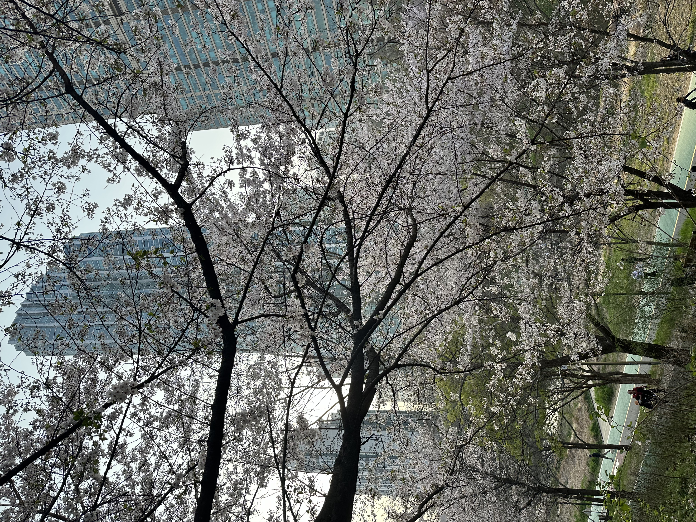
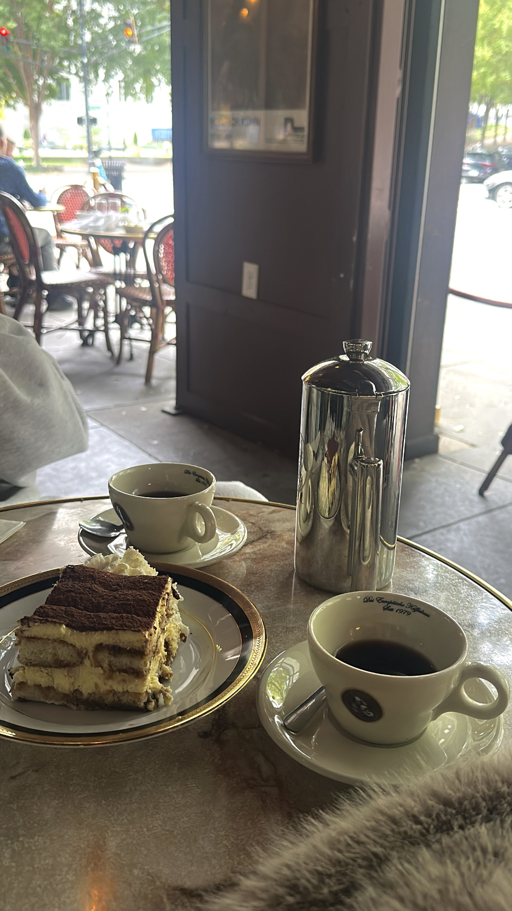
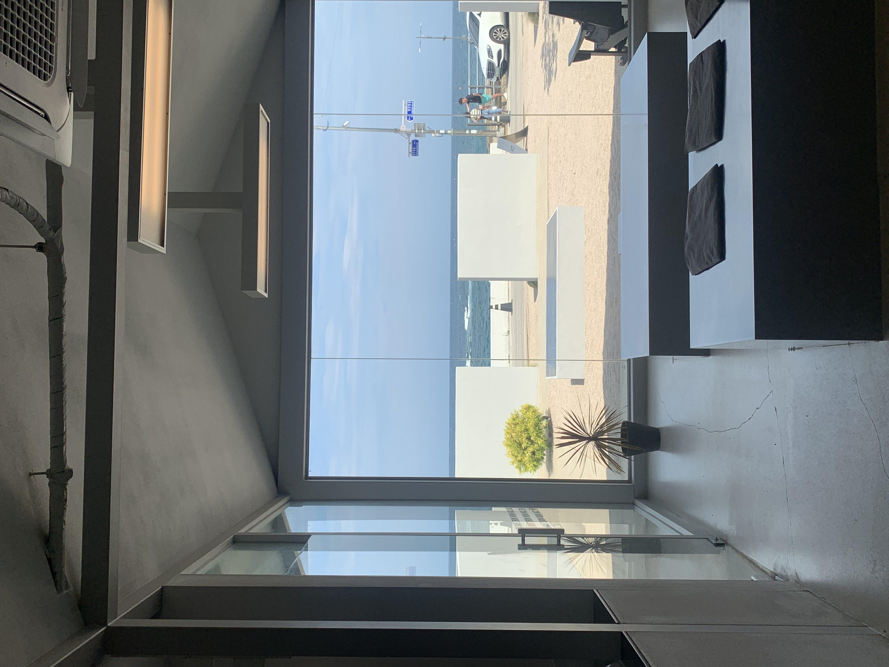
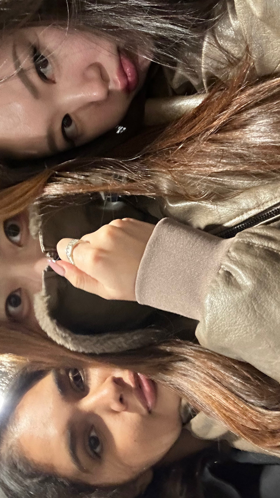
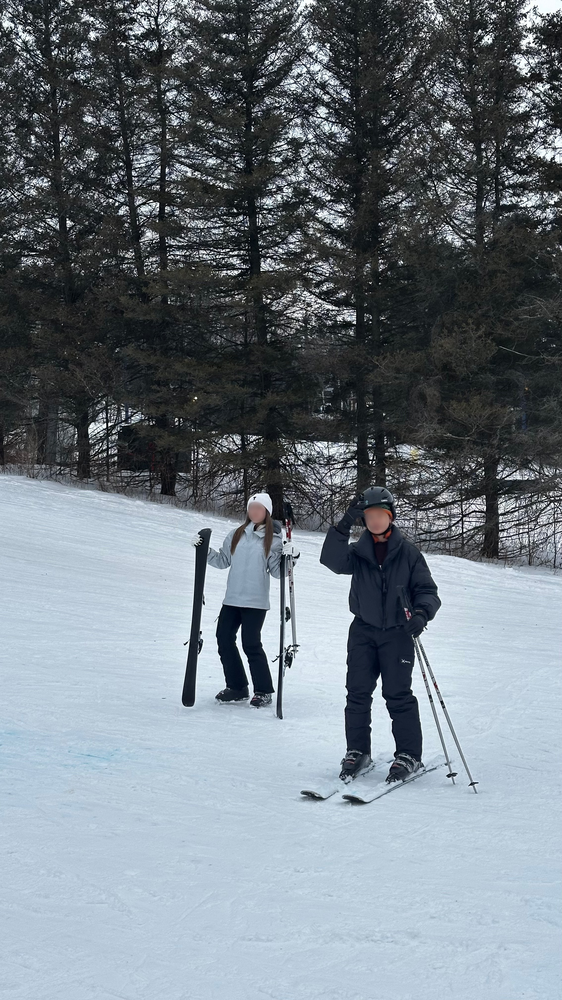

Sunflower
Post Malone & Swae Lee · 2018
I chose a song I play on repeat in each season and paired it with a photo from my camera roll. The photos remind me what those days looked like, and the songs bring back how they felt. Ed Sheeran’s “Photograph” is my favorite song, and it ties those four memories together.

Ed Sheeran · 2014

Post Malone & Swae Lee · 2018

Taylor Swift · 2019

LANY · 2018

Ariana Grande · 2014